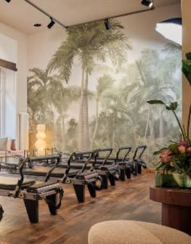

Gynäkologische Privatpraxis · Berlin
Frauengesundheit, die mit dir wächst.
Wir begleiten dich mit Zeit und einem persönlichen Plan durch alle Lebensphasen.
Erstgespräch anfragen
Einmal im Jahr zehn Minuten. Das reicht nicht.
Dein Körper verändert sich zwischen zwei Terminen, und viele Fragen bleiben offen. Wir nehmen uns die Zeit, die gute Medizin braucht.
Unsere Schwerpunkte
Wobei wir dich begleiten.
01Zyklus & Hormone
„Ich möchte verstehen, was mein Zyklus mir sagt.“
Wir schauen genau hin, wenn sich dein Zyklus verändert oder Beschwerden bleiben.
- Zyklusbeschwerden
- Verhütungsberatung
- PCOS
- Endometriose
02Kinderwunsch & Mutterschaft
„Ich plane eine Familie und möchte gut vorbereitet sein.“
Von der ersten Planung bis in die Zeit nach der Geburt.
- Präkonzeption
- Schwangerschaftsplanung
- Postpartum
03Wechseljahre
„Ich möchte die Wechseljahre informiert und gelassen angehen.“
Wir ordnen ein, was sich verändert, und entscheiden gemeinsam, was dir guttut.
- Perimenopause
- Postmenopause
- HRT-Beratung, fachärztlich begleitet
04Prävention & Longevity
„Ich möchte heute für die nächsten Jahrzehnte vorsorgen.“
Langfristige Gesundheit beginnt lange bevor etwas wehtut.
- Vorsorge
- Ärztlich begleitete Gewichtsreduktion
- Energie
- Knochen und Herz